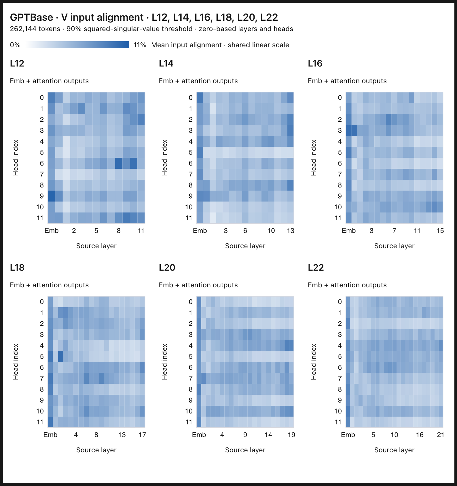
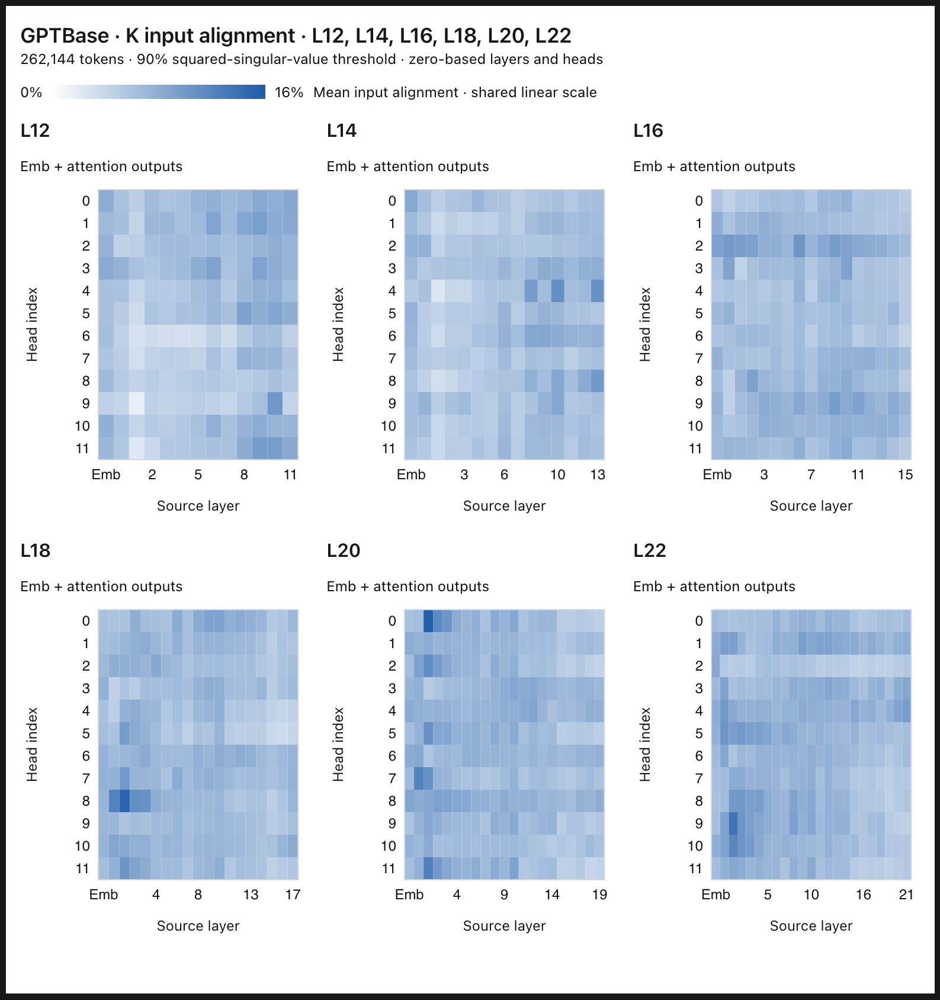
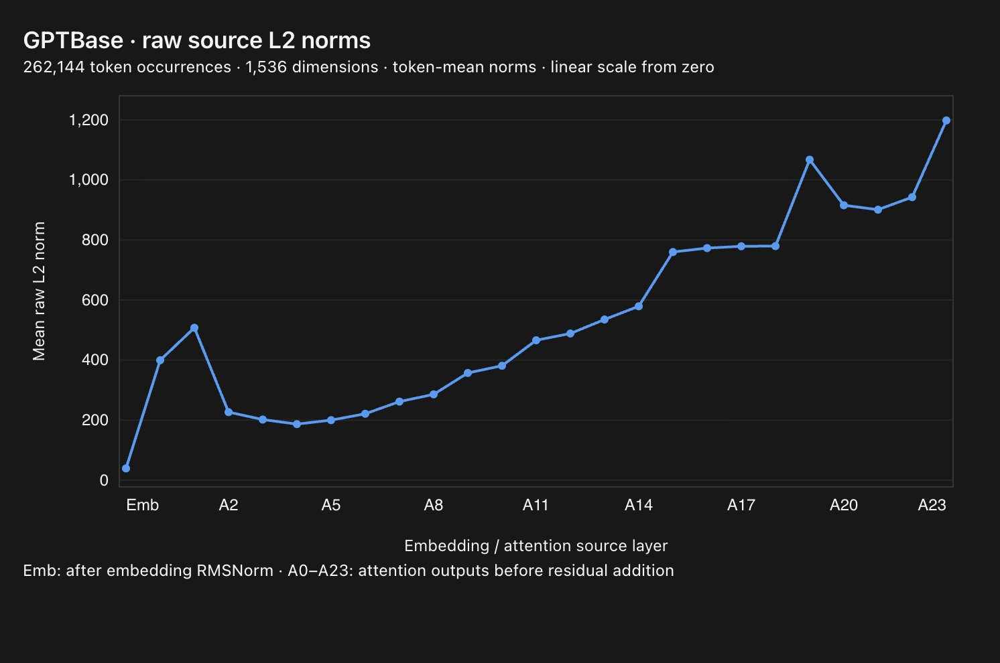
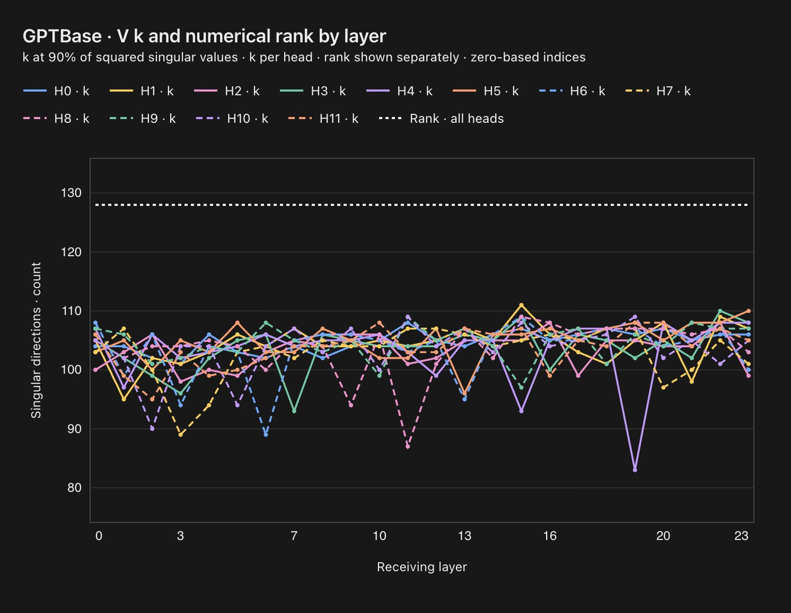

The importance of token embeddings to value vectors
October 24, 2026
I think it is only partially useful, when we attribute how "important" each prev layer output is to a following layer, to look at their norms or an associated scalar weight (like Attn Res). What this view misses is that each matrix has privileged input directions -- if an input has a larger projection on those directions, it will affect the norm of the output much more significantly than another input with the same norm.
As a result, in a standard transformer of 780M, I break down each W_v/W_q/W_k matrix in each attention head across layers by input directions aligned with their singular values. These will be what the matrices want to "look for" in an input. Then, I feed each previous layer output, including the token embedding, into each decomposed matrix, to record how much relative to its norm does it project onto those top input directions (accounting for 90% of the squared singular values). This tells us whether any layer matters particularly for Q, K, or V.
My finding is that while no layer matters particularly in terms of direction for Q or K, the token embedding matters significantly for V, across all layers. This is very illuminating because our prev EMNLP paper, https://arxiv.org/abs/2606.02780, uses ablations and validation losses only to reach the same conclusion. If we just look at the norm of the token embedding, it does not stand out among all layer outputs, yet it creates an outstanding projection to almost all W_v matrices' top input directions.
To show that this large projection is not accidental, we can plot how much each W_v's input directions are concentrated. We find that it is decently concentrated -- 80% of directions accounting for 90% of squared singular values, so an unusually large projection does mean token embeddings have privileged information.
Ongoing work.




Citation
@misc{he2026tokenembeddings,
author = {He, Muyu},
title = {The importance of token embeddings to value vectors},
year = {2026},
url = {https://riddlehe.github.io/blog/importance-of-token-embeddings-to-value-vectors.html}
}